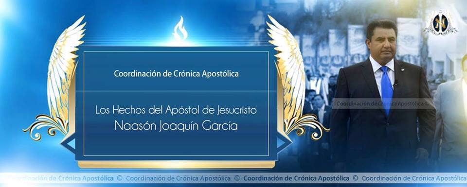
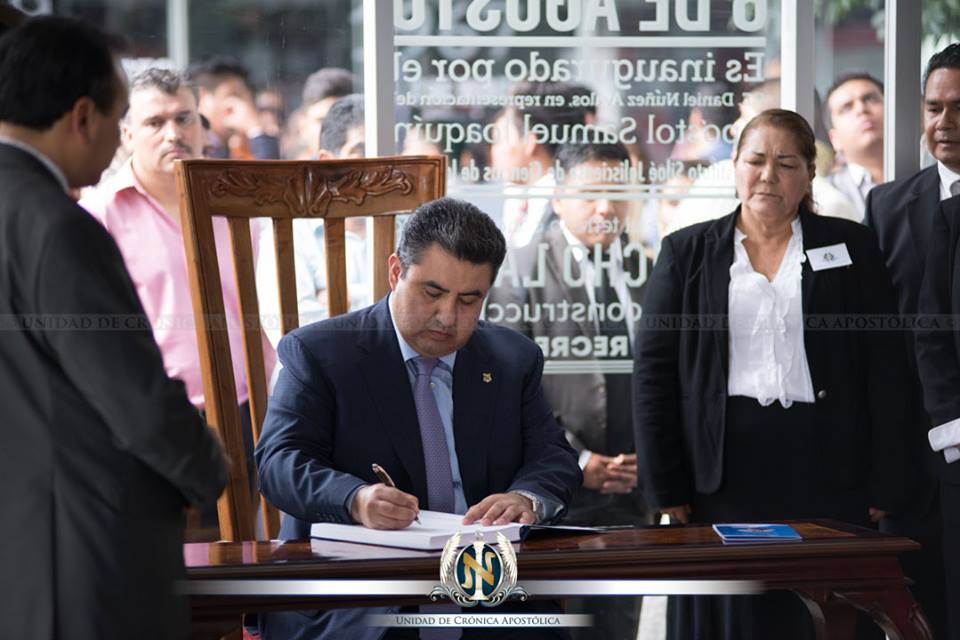

Apóstol Naasón Joaquín García
Semblanza Biografica

El Apóstol de Jesucristo Naasón Joaquín García actual director Internacional de la Iglesia La Luz del Mundo nació el 7 de mayo de 1969 en la ciudad de Guadalajara Jalisco hijo del Apóstol Samuel Joaquín Flores y de su esposa la hermana Eva García López fue el quinto de los ocho hijos procreados por el matrimonio su infancia y adolescencia transcurrieron en el hogar paterno en la colonia Hermosa Provincia
desde su juventud el Apóstol Naason Joaquín experimento la satisfacción que proporciona el servicio a Dios el 11 de agosto de 1983 a la edad de 14 años dio el primer paso en su profesión de fe fue bautizado en el nombre de Jesucristo y recibió el espíritu santo el 25 de febrero de 1984 en los años siguientes siendo a un adolescente se integró junto con otros jóvenes al grupo de obreros de Hermosa Provincia cuya labor evangelizadora se desarrolla en las colonias de la zona metropolitana de Guadalajara en consonancia con lo anterior a mediados de los 80 acompañó a un grupo de misioneros radicados en España su estadía en la península ibérica que incluyó el dar testimonio de la fe cristiana en los hogares y las plazas fueron suceso que quedó grabado indeleblemente en su memoria otra de las bendiciones experimentarás fue sin duda el haber acompañado a su padre el Apóstol Samuel Joaquín en algunas de sus giras al interior de la República Mexicana y el extranjero.
a la edad de 17 años el hermano Naason Joaquín asume su primera responsabilidad el apóstol Samuel Joaquín le da el encargo del grupo de jóvenes chicos de la iglesia de la colonia Hermosa Provincia el 25 de agosto de 1992 posteriormente el 10 de mayo de 1992 pasó a ser responsable de los jóvenes grandes y el 14 de junio de ese año contrajo matrimonio con la señorita Alma Zamora Espinoza en Guadalajara con quien procreó tres hijos Adoraim Eldai y Sibma y en su trayectoria de 28 años de labor pastoral estuvieron a su cargo de diciembre de 1992 a diciembre de 2014 las siguientes congregaciones Phoenix y Tucson Arizona sur centro Los Ángeles Huntington Park North Hollywood Los Ángeles Sur Santa María Los Ángeles San Diego y Santa Ana California.

En el transcurso de este trabajo ministerial recibió los ungimientos como diácono evangelista 1994 y pastor evangelista 2000 a la par de su labor pastoral el apóstol Naason Joaquín trabajo con dedicación en otras responsabilidades fue nombrado por el Apóstol de Jesucristo Samuel Joaquín Flores director de la Jurisdicción Norte de la Iglesia La Luz del Mundo 2003 2014 que comprende los estados de Baja California Baja California Sur Sonora Chihuahua Nuevo León y Tamaulipas en donde tuvo a su cargo la supervisión y atención a las necesidades espirituales y materiales de las congregaciones asentadas en dicha tema ocasión con el propósito de promover la difusión de la doctrina cristiana a través de los medios de yo organizó Comunication Center Berea USA CCB USA.
En esta instancia mediática que entró en operación en agosto de 2009 además de tener un enfoque cultural y de divulgación es la responsable de transmitir la señal de video de los eventos más importantes de la iglesia La Luz del Mundo Santa Cenas presentaciones apostólicas inauguraciones de templos estudios bíblicos etcétera a nivel mundial asimismo alento la formación de la plataforma de profesionistas del país vecino apoyo las giras cívicas del trabajo a favor del respeto a los Derechos Humanos la libertad de creencias la educación laica y la no discriminación que tuvieron lugar en 2007 y 2009 en el norte de la república mexicana y a las instancias educativas entre las acciones dignas de encomio.